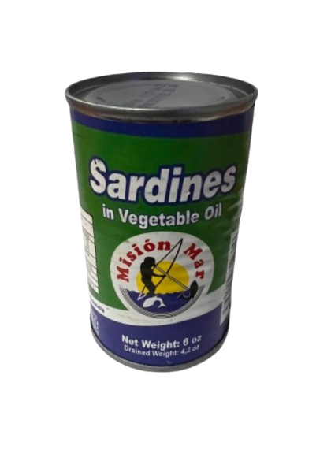
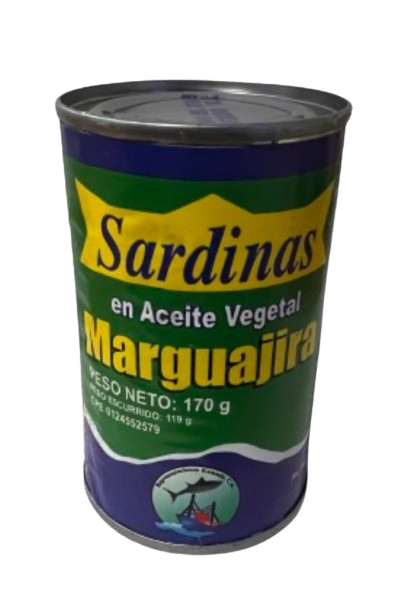
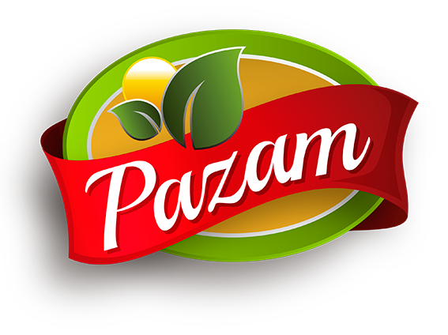

Misión Mar
Sardinas en Aceite Vegetal (6 oz)
Textura firme y sabor balanceado de alta rotación comercial. Presentación en lata de 6 oz (170 g).
Procesamos sardinas y atún enlatado bajo nuestras marcas Misión Mar y Marguajira, además de operar líneas de Co-Packing para socios comerciales y cadenas en toda Venezuela.
Operamos desde Valencia, Estado Carabobo, bajo controles térmicos auditados y trazabilidad por lote en cada turno de envasado.
Selección estricta de materia prima fresca y esterilización comercial certificada para máxima vida útil en anaquel.
Logística preparada para pedidos por bultos y paletas hacia distribuidores y comercios en todo el territorio nacional.
Presentaciones de consumo masivo pensadas para proteger el margen comercial del mayorista y asegurar reposición constante.
Portafolio comercial de Misión Mar y Marguajira disponible para distribución regional, nacional e institucional.

Textura firme y sabor balanceado de alta rotación comercial. Presentación en lata de 6 oz (170 g).

Salsa condimentada de gran aceptación popular y salida continua en anaquel. Lata de 170 g.

Conserva clásica en aceite vegetal de excelente rendimiento para retail y mayoristas. Lata de 170 g.

Alto aporte proteico en presentación ligera ideal para supermercados, distribuidores y foodservice. Lata de 140 g.
Integramos nuestra infraestructura de envasado hermético, tratamiento térmico en autoclave y control de calidad a la estrategia comercial de cadenas, importadores y marcas propias que desean escalar sin invertir en planta física.
Procesamos, sellamos y etiquetamos conservas de pescado bajo la identidad visual y especificaciones técnicas de tu organización.
Construimos convenios operativos a mediano y largo plazo asegurando reserva de capacidad de línea, continuidad de inventario y confidencialidad comercial.
Respaldamos cada corrida de producción con registros de esterilización, control de peso escurrido y coordinación directa de despacho desde Valencia.

Aliado ComercialEn Representaciones Kamada, C.A. mantenemos una sólida relación comercial y alianza estratégica con Pazam Industria Alimenticia. Cuando tu empresa, distribuidora o cadena requiera abastecimiento mayorista o servicios de Co-Packing en mayonesa, salsa inglesa, soya, ajo, kétchup, mostaza y vinagres, puedes acceder directamente a su portafolio en www.pazam.com.ve, con el mismo respaldo industrial y despacho a nivel nacional.
Visitar pazam.com.ve →Escríbenos para recibir precios al mayor de nuestras marcas propias o coordinar una evaluación técnica para proyectos de Co-Packing y alianzas estratégicas.